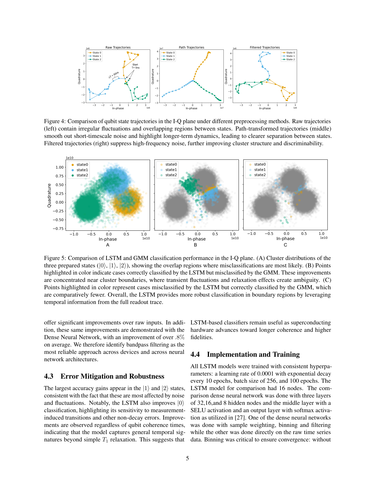
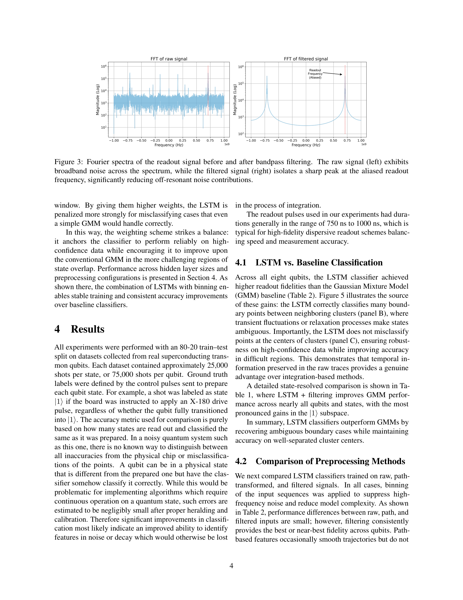

Essence

Figure 2: Control and readout schematic.
초전도 큐비트의 측정 오류를 줄이기 위해 시간 해상도를 보존한 원본 아날로그 신호에 LSTM 네트워크를 적용하여 기존의 통합 신호 기반 클러스터링 방식을 능가하는 양자 상태 판별 방법을 제안한다.
저자: Samuel Jung, Neel R. Vora, A. Hashim, Yilun Xu, Gang Huang | 날짜: 2026 | URL: https://arxiv.org/abs/2601.19057
Figure 2: Control and readout schematic.
초전도 큐비트의 측정 오류를 줄이기 위해 시간 해상도를 보존한 원본 아날로그 신호에 LSTM 네트워크를 적용하여 기존의 통합 신호 기반 클러스터링 방식을 능가하는 양자 상태 판별 방법을 제안한다.

Figure 5: Comparison of LSTM and GMM classification performance in the I-Q plane. (A) Cluster distributions of the

Figure 3: Fourier spectra of the readout signal before and after bandpass filtering. The raw signal (left) exhibits
총평: 본 논문은 양자 측정 오류라는 실질적이고 중요한 문제에 시계열 기계학습을 창의적으로 적용하여 기존 방식을 능가하는 성과를 달성했다. 실험 기반 검증과 명확한 동기 부여는 우수하나, 계산 오버헤드와 확장성에 대한 심화 분석 및 더 광범위한 실험 검증이 있으면 더욱 강력한 기여가 될 수 있다.